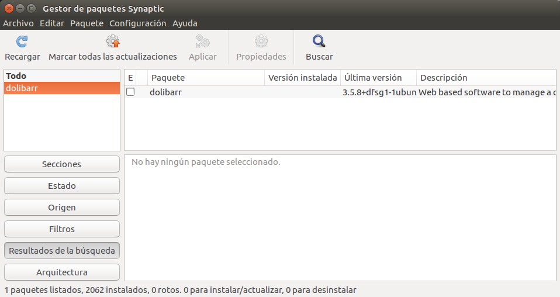

María ha descubierto una interesante información. Navegando por las webs de los ERP ha conocido la existencia de los llamados Webinars o seminarios gratuitos transmitidos por Internet. Numerosos ERP utilizan este novedoso sistema para transmitir conferencias, talleres o cursos rápidos de las aplicaciones. María ha podido asistir a dos de ellos, en español, y le han aclarado muchas dudas, incluso ha podido realizar preguntas al interlocutor sobre los temas que le han interesado.
La información recopilada con estos eventos y el análisis que han venido haciendo hasta ahora es considerable. Universidades e Institutos Tecnológicos se hacen eco de las aplicaciones ERP más importantes, de las cuales han tomado debida nota en BK Programación.
Ada le comenta a María que sería interesante realizar la instalación de dos de los ERP más destacables, para poder comprobar "in-situ" el manejo y la funcionalidad de estas aplicaciones.
Pantallazo de Synaptic propiedad de Ubuntu(GNU/GPL)
¿Qué tareas deben llevarse a cabo en el proceso de instalación y configuración de un sistema ERP/CRM? Para conocerlas bien lo mejor es llevar al terreno práctico la instalación de estos ERP, es decir, instalarlo nosotros y posteriormente configurarlo, y adentrarnos en ellos para conocer su funcionamiento. En los siguientes apartados te damos algunas indicaciones para hacerlo, si bien es cierto que dependerá mucho del sistema operativo y del tipo de instalación que elijas.
En general, las tareas implicadas en un proceso de instalación e implantación de un ERP son las siguientes:
Diseño de la instalación. Previo a la instalación deberá realizarse un estudio de las necesidades de la empresa y cómo serán resueltas por la aplicación ERP: tablas que es preciso adaptar, datos, formularios e informes que se requieren, etc.
Instalación de equipos servidores y clientes. Será necesaria la instalación, revisión y/o actualización del hardware de la empresa, de manera que cumpla los requisitos mínimos necesario. En ocasiones, la empresa puede optar por contratar los servicios SaaS de una empresa externa y acceder a los recursos remotos que ésta le proporciona.
Instalación del software. Instalación tanto de la aplicación ERP como del software que ésta necesite para su correcto funcionamiento.
Adaptación y configuración del programa. Una vez instalado, será necesario la configuración del software y su adaptación a la empresa cliente.
Migración de datos. Este proceso es de gran importancia para la empresa, pues los datos son imprescindibles para su buen funcionamiento: clientes y proveedores, contabilidad, facturación, son datos muy importantes y de gran volumen. En ocasiones serán necesarios procesos manuales si no existe forma de automatizar el traspaso de datos del sistema antiguo a la nueva aplicación ERP.
Realización de pruebas. La instalación del software puede conllevar un periodo de transición en el que coexistirá la solución ERP con la solución antigua de gestión de la empresa. Este periodo de transición comprenderá la realización de pruebas del nuevo aplicativo, y la migración de datos del software antiguo al nuevo. En cualquier caso, será necesario verificar mediante las pruebas necesarias que la solución ERP funciona correctamente y los resultados obtenidos son satisfactorios.
Documentación del sistema. En esta fase se deben realizar los documentos y manuales necesarios y su puesta a disposición ante la organización, mediante los medios de difusión interna que disponga: tablón de anuncios, correo electrónico, Intranet, etc.
Formación de usuarios. Esta etapa comprende la formación de los usuarios sobre la utilización del ERP, que podrá conllevar una formación inicial para los responsables del proyecto y una formación para los usuarios finales.
Acronimo de las siglas en Inglés de Enterprise Resource Planning Customer Relationship Management, cuyo significado es Sistema de Planificación de Recursos – Manejo de Relaciones con el Cliente.
Acrónimo de Software as a Service. Es un modelo de distribución de software en donde la compañía de tecnologías de información y comunicación (TIC) provee el servicio de mantenimiento, operación diaria, y soporte del software usado por el cliente. Regularmente el software puede ser consultado en cualquier computador, esté presente en la empresa o no.
Red privada entre los ordenadores de una empresa para compartir parte de sus sistemas de información y operacionales.
Para saber más
Durante el proceso de instalación utilizaremos comandos bajo el terminal de Ubuntu. En el siguiente enlace se describen los comandos más habituales de la terminal de Ubuntu: